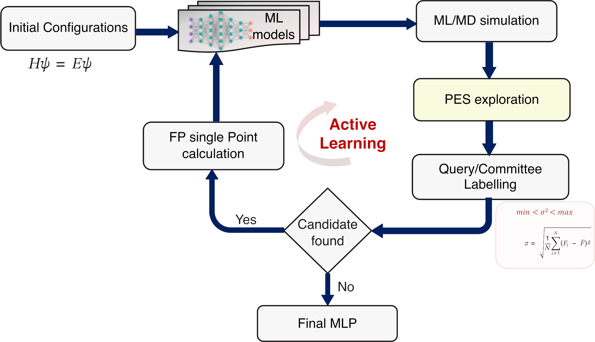

SPARC: An automated workflow toolkit for accelerated active learning of reactive ML interatomic potentials
Open-source Python toolkit automating query-by-committee active learning for reactive machine learning potentials with ASE, PLUMED, and AIMD relabeling.